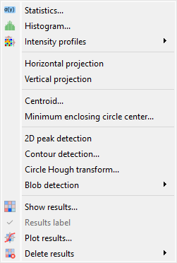
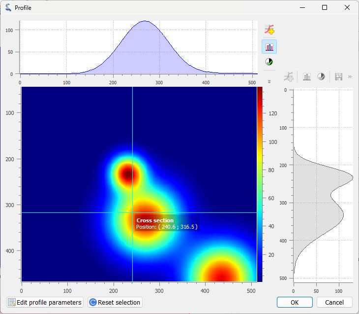
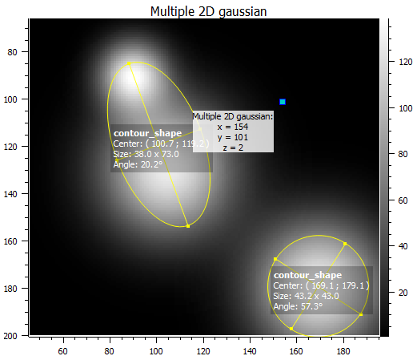

Analysis features on Images#
This section describes the image analysis features available in DataLab.
See also
Operations on Images for more information on operations that can be performed on images, or Processing Images for information on processing features on images.

Screenshot of the “Analysis” menu.#
When the “Image Panel” is selected, the menus and toolbars are updated to provide image-related actions.
The “Analysis” menu allows you to perform various computations on the current image or group of images. It also allows you to compute statistics, to compute the centroid, to detect peaks, to detect contours, and so on.
Note
In DataLab vocabulary, an “analysis” is a feature that computes a scalar result from an image. This result is stored as metadata, and thus attached to image. This is different from a “processing” which creates a new image from an existing one.
Statistics#
Compute statistics on selected image and show a summary table.

Example of statistical summary table: each row is associated to an ROI (the first row gives the statistics for the whole data).#
Histogram#
Compute histogram of selected image and show it in the Signal Panel.
Parameters are:
Parameter |
Description |
|---|---|
Bins |
Number of bins |
Lower limit |
Lower limit of the histogram |
Upper limit |
Upper limit of the histogram |

Example of histogram.#
Intensity profiles#
Line profile#
Extract an horizontal or vertical profile from each selected image, and create new signals from these profiles.

Line profile dialog. Parameters may also be set manually (“Edit profile parameters” button).#
Segment profile#
Extract a segment profile from each selected image, and create new signals from these profiles.
Average profile#
Extract an horizontal or vertical profile averaged over a rectangular area, from each selected image, and create new signals from these profiles.

Average profile dialog: the area is defined by a rectangle shape. Parameters may also be set manually (“Edit profile parameters” button).#
Radial profile extraction#
Extract a radial profile from each selected image, and create new signals from these profiles.
The following parameters are available:
Parameter |
Description |
|---|---|
Center |
Center around which the radial profile is computed: centroid, image center, or user-defined |
X |
X coordinate of the center (if user-defined), in pixels |
Y |
Y coordinate of the center (if user-defined), in pixels |
Horizontal and vertical projections#
Compute horizontal and vertical projection profiles:
Horizontal projection: Sum the pixel values along each row (projection on the x-axis).
Vertical projection: Sum the pixel values along each column (projection on the y-axis).
Centroid#
Compute the centroid of the image using a robust adaptive algorithm.
DataLab uses the sigima.tools.image.get_centroid_auto() function to estimate
the image centroid.
This function combines the robustness of a Fourier-based approach (as discussed by Weisshaar et al.) with fallback mechanisms designed to handle pathological cases, such as:
truncated or asymmetric shapes,
off-center objects,
strong background noise.
Internally, sigima.tools.image.get_centroid_auto() compares the
Fourier result with two alternative estimators (a projected profile-based method
sigima.tools.image.get_projected_profile_centroid() and a standard centroid
from scikit-image), and selects the most consistent one.
This strategy ensures accurate and stable results across a wide range of image types — from clean laboratory data to noisy or partial acquisitions.
Minimum enclosing circle center#
Compute the circle contour enclosing image values above a threshold level defined as the half-maximum value.
2D peak detection#
Automatically find peaks on image using a minimum-maximum filter algorithm.

Example of 2D peak detection.#
See also
See 2D Peak Detection for more details on algorithm and associated parameters.
Contour detection#
Automatically extract contours and fit them using a circle or an ellipse, or directly represent them as a polygon.

Example of contour detection.#
See also
See Contour Detection for more details on algorithm and associated parameters.
Note
Computed scalar results are systematically stored as metadata. Metadata is attached to image and serialized with it when exporting current session in a HDF5 file.
Circle Hough transform#
Detect circular shapes using circle Hough transform (implementation based on skimage.transform.hough_circle_peaks).
Blob detection#
- Blob detection (DOG)
Detect blobs using Difference of Gaussian (DOG) method (implementation based on skimage.feature.blob_dog).
- Blob detection (DOH)
Detect blobs using Determinant of Hessian (DOH) method (implementation based on skimage.feature.blob_doh).
- Blob detection (LOG)
Detect blobs using Laplacian of Gaussian (LOG) method (implementation based on skimage.feature.blob_log).
- Blob detection (OpenCV)
Detect blobs using OpenCV implementation of SimpleBlobDetector.
Note
Automatic ROI creation for detection features
All detection features (2D peak detection, contour detection, circle Hough transform, and blob detection) support automatic ROI creation around detected objects. This feature:
Creates rectangular or circular ROIs around each detected feature
Automatically sizes ROIs based on minimum distance between detections
Requires at least 2 detected objects to determine appropriate ROI size
Enables subsequent processing on individual detected regions
To use this feature, enable “Create regions of interest” in the detection parameters dialog and choose the desired ROI geometry.
Show results#
Show the results of all analyses performed on the selected images. This shows the same table as the one shown after having performed a computation.
Results label#
Toggle the visibility of result labels on the plot. When enabled, this checkable menu item displays result annotations (such as centroid markers, detected contours, blob circles, or other analysis shapes) directly on the image plot.
This option is synchronized between Signal and Image panels and persists across sessions. It is only enabled when results are available for the selected image.
Plot results#
Plot the results of analyses performed on the selected images, with user-defined X and Y axes (e.g. plot the contour circle radius as a function of the image number).